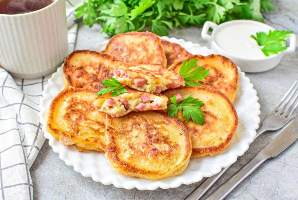
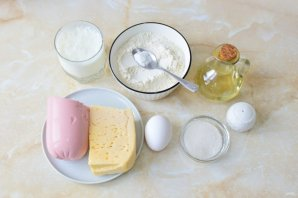
Чтобы приготовить оладьи с сыром и колбасой, подготовьте необходимые ингредиенты. Муку просейте через сито, чтобы насытить её кислородом.
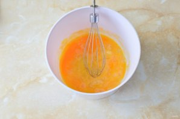
В чаше смешайте яйцо с сахаром и солью.
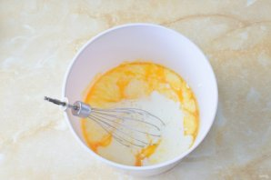
Влейте в чашу кефир. Смешайте.
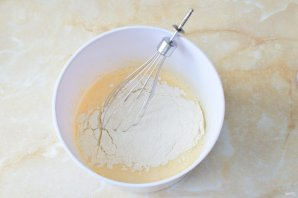
Подсыпайте муку и вмешивайте её в тесто.
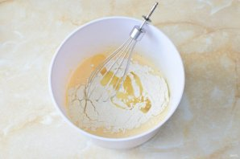
Добавьте растительное масло. Готовое тесто должно быть достаточно густое.
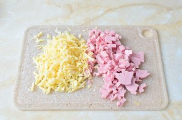
Вареную колбасы нарежьте мелким кубиком. Сыр потрите на крупной терке.
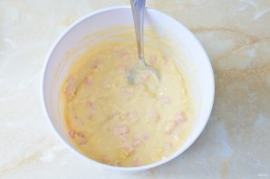
Вмешайте сыр и колбасу в тесто.
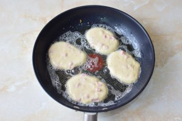
На горячую сковороду налейте растительное масло. Ложкой выкладывайте тесто в виде оладий.
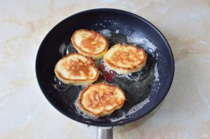
Готовьте оладьи на малом огне с двух сторон до золотистого цвета.
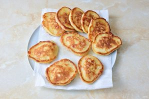
Оладьи выкладывайте на бумажное полотенце, чтобы пропитать с них лишнее масло.
Оладьи готовы! Приятного аппетита!